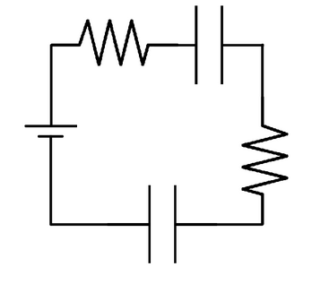
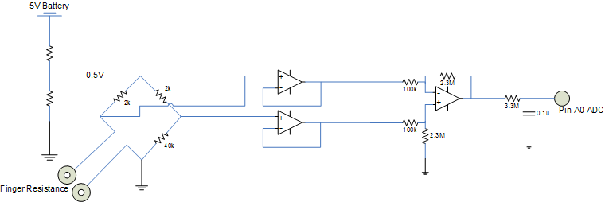
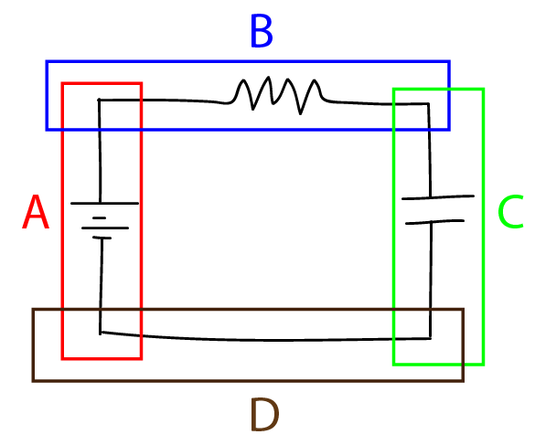
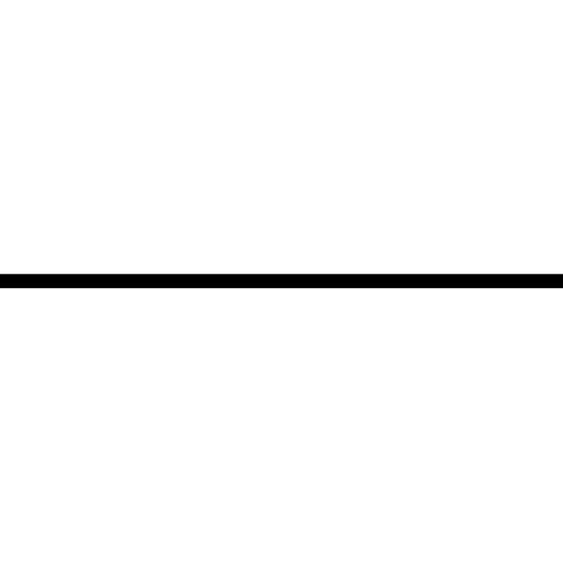
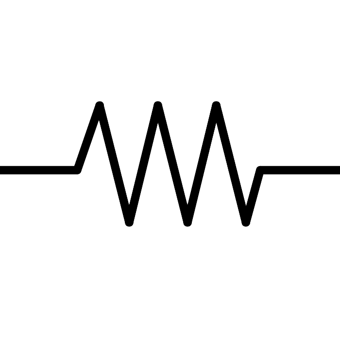
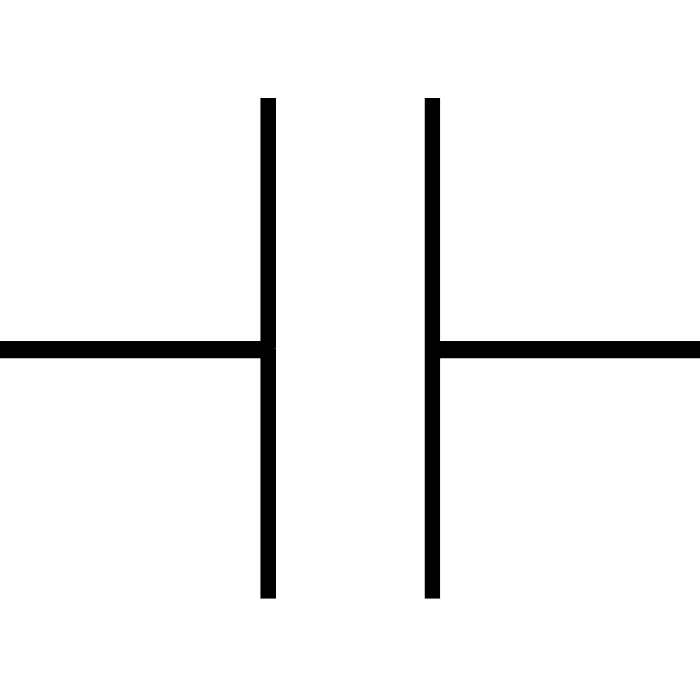

Reflection & Final Proposal
Final Design
Design Pipeline
Our software takes an image of a hand-drawn circuit diagram as input. First, we convert the photo to black and white and threshold it, ensuring that the photo only exists of white pixels and black pixels, with no grayscale. We crop the border of the photo to the outermost points of each segment in the diagram. Then, we look for wires in the diagram by scanning the image for rows and columns with an average darkness darker than a defined threshold; we identify intersections and separate the diagram into line segments. We proceed to rotate each segment so that it is horizontal as this allows us to run our component finder.
Using the location of the wire that we found before, we offset a certain distance above and below the wire. We move left to right along the segment looking for any instance of non-whitespace. Upon finding these instances, we conjecture about the spacing between each component and find the start and end points of each component by looking at the space between the instances of non-whitespace. If that spacing exceeds a certain percentage of the width of the segment, we assume that the previous component has ended and a new one has started. From there, we crop an image of the located component from the diagram, and we use our component classifier to identify what component is there.
After determining the information in each segment, we draw it cleanly. Going segment by segment, we draw each one and then, using their original positions in the drawing, we paste each segment onto a final canvas. The result is our initial goal of a nicely rendered circuit diagram.
Below is a procedure of this pipeline:
1) Take photo of circuit
2) Convert to Black and White
3) Crop photo
4) Search for wires
5) Identify segments
6) Search for components
7) Classify components
8) Draw segments
9) Draw circuit
Design Story
Two important design choices we had to make involve our segmentation algorithm and the way we draw each segment.
For the segmentation algorithm, we had to make an important choice in what we classify as a segment. There are two variations of circuit diagrams, one that clearly shows the current flowing back into the battery and the other that simply shows what components should be connected either to some voltage or to ground. We chose to focus on the first type of circuit diagrams, which essentially consist of sequences of rectangles. Below are examples of both variations.


Focusing on the square circuit diagrams means that each segment must be bounded by two intersection points. We made this decision based on the input from one of our members in Signals and Systems, who saw the square diagrams more frequently in higher-level circuit classes. In addition, requiring each segment to be bounded by two intersections (rather than allowing for a segment to be bounded by one intersection and an edge) simplifies the segmentation algorithm and increases its accuracy. The diagram below describes our segmentation process.

Another design choice that we made focused on how we planned to draw each segment after determining what components are in each segment. One approach that we initially took was to draw the segment by separating each component with a wire. Thus, a segment with just a resistor in it would be drawn as: wire, resistor, wire using the images below.



However, this approach was problematic because the length of a segment depended on the number of components it contained. If two horizontal segments that were supposed to be the same length contained different numbers of components, we would have had to scale one of them up to match, changing either the size or the aspect ratio of the components. We solved this problem by first drawing a wire of appropriate length, using only the wire image, and then superimposing the components in an evenly spaced pattern.
Data Structure
Through our image segmentation algorithm, we produce a list of line segment objects. Each line segment object is initialized with three attributes: two pixel tuples (one for either end of the segment) and an image of the hand-drawn segment. When each segment passes through first the component identifier and then the component classifier, it gains an attribute (a list describing the components along the segment and the order in which they appear) and we replace the hand-drawn image with a computer-generated one.
Development Plan
For further development, we want to improve the accuracy of our segmentation, component identification, and component classification algorithms to work on various types of user inputs. Currently, we need the user to draw the circuit using a thick marker, space the components apart and away from the edges of each segment, and we need each component to be quite large in order to accurately render a clean circuit diagram. To accomplish this, we would need to vary some of the parameters we use to threshold the image and offset the lines searching for instances of non whitespace. We would also need to provide more training images for our classifier.
In addition, we wanted to put our service online so that students could use our program to convert the circuit diagrams they had to clean renderings they could put in their lab reports. In the future, we would probably have to use Django to create our SmarterBoard web app.
Project Proposal
SmarterBoard Project Repository:
https://github.com/dinopants174/SmarterBoard
Updates on What We Have Done
Feature Extraction using Exposure Histograms of Gabor Filtered R vs C Images
88.8% Accuracy for Resistor versus Capcitor Classification
Who We Are
We are a team of 4 students from Olin College taking a Software Design course. Our project focuses on performing optical character recognition, OCR, to create a rendered circuit diagram based off of a hand-drawn schematic. Our members consist of Ryan Louie @themythicaldrago, Sarah Walters @swalters4925, Doyung Lee @doyunglee, and Zoher Ghadyali @dinopants174.
This project is designed to integrate with the R.E.S.I.S.T.O.R team. Our project will generate the circuit diagram while the R.E.S.I.S.T.O.R team will use our diagram and data to demonstrate what the circuit would look like on a breadboard. We do plan on creating a product electrical engineers and students can use in everday life and interfacing with R.E.S.I.S.T.O.R will help us achieve that goal.
What Will It Do?
The blue-sky goal of the project is to provide a suite of services that demonstrate practical uses of OCR. We have come up with a list of applications that convert images to documents containing the text within the images. These include: a note generator using text on a whiteboard, a code compiler using hand-written code, a Wolfram Alpha type service using hand-written equations or graphs, a clean rendering of a circuit diagram from a hand-drawn image, and a translator using an image of text in another language.
The project will be centered around the circuit schematic renderer - a piece of software which produces a clean, professional circuit diagram using a hand-drawn diagram. Our minimum deliverable for this project would be to render the clean diagram using simple RC circuits. If we finish this project and still have time, we may pursue some of our extensions or simply focus on creating a very professional and easy to use web-app or GUI.
We could extend the core of the project by creating some of the other tools in the software suite and using them in conjunction with the circuit diagram generator. The software would organize the data into an appropriate structure - titles, lists, tables, etc. We also have several extensions in mind concerning the specific tools we’ve thought about - the circuit diagram and graph tools could read equations and data from circuits and graphs; the circuit diagram tool could also produce vector graphics with moveable components instead of flat images. Similarly, the image-to-text converter could translate the words it reads from an image. Lastly, if we find we have plenty of time to do so, we’re potentially interested in creating a mobile or web app which makes our product usable.
Challenges Along the Way
There are some questions we need to answer in order to begin work on this project. We need to know where the wires of the circuit diagram are and how they are connected and we need to be able to understand the connections of the components in the diagram in order to interface with R.E.S.I.S.T.O.R. One problem that comes to mind is how to deal with components more complicated than resistors and capacitors that have multiple wires and connections flowing into and out of the component.
What we have found doing just a little bit of research are packages that perform OCR for us in Python. However, we realize that using these packages does not really help us achieve our goal of performing OCR ourselves. In addition, we are doing OCR on circuit diagrams, which will mean we cannot use traditional OCR packages that trained off of English and type.
Where We Need Help
We do not have an angel adviser in mind, but we would appreciate one whose expertise is in computer vision and image processing, or further down the road potentially one who has skills related to mobile development (from Python).